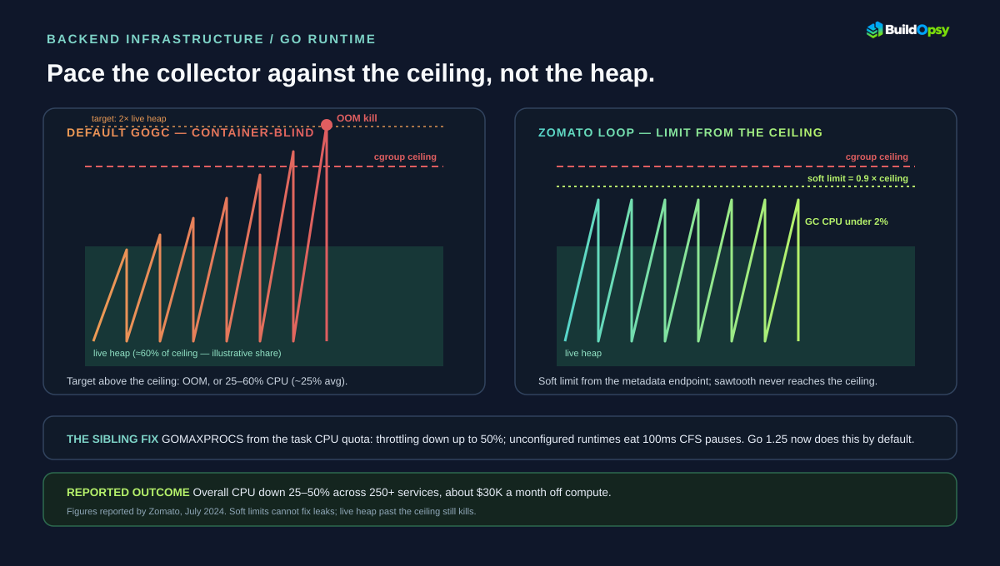
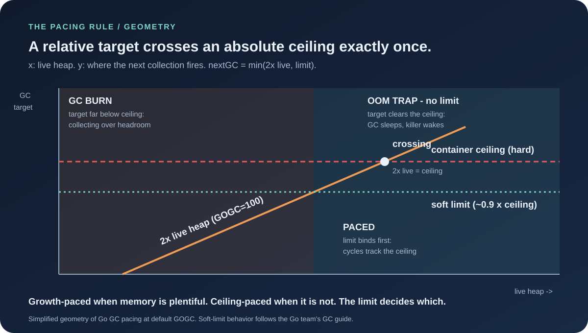

1. The Default That Burns: A Collector Blind to the Ceiling
Go's collector has one pacing rule at its core. At the default GOGC of 100, it schedules the next collection when the heap reaches roughly twice the live heap measured at the previous cycle. That rule knows two things — how much memory survived last time, and the multiplier — and nothing about the world outside the process: no cgroup limit, no container quota, no ECS task ceiling. Before Go 1.19, that relative target was the only knob that existed.
Container blindness fails in two opposite directions, and Zomato's team met both. When live heap is large, twice-live overshoots the container's hard limit before the collector even wakes up — the process asks the OS for memory past its cgroup cap and the OOM killer answers. When live heap is small inside a roomy container, twice-live sits far below the ceiling, so the collector fires constantly over memory nobody is competing for, converting idle headroom into GC CPU. One bug, two symptoms: crashes on the big services, a 25%-average GC tax on the small ones.
2. The Fleet That Felt It: 250+ Services on ECS
Zomato runs its backend as hundreds of Go microservices on AWS ECS tasks and EC2 compute — the July 2024 write-up puts the rollout at over 250 services. At that shape, a per-service inefficiency multiplies twice: once across the fleet's instance count, and again through the service mesh, because every container a service needs is a connection each downstream must maintain. Zomato's team calls this out explicitly — fewer containers per service meant less connection load on downstream callers, a second-order win beyond the CPU math.
The symptoms were the classic pair: OOM kills with no leak in sight, and profiles showing the collector eating CPU on services whose live heaps were modest. That combination is the fingerprint of pacing blindness — leaks would grow the live heap monotonically, but these services died or burned while their reachable memory stayed flat. If your dashboards show high GC CPU beside a flat live-heap line, you are looking at the same fingerprint.

3. The Mechanism: A Soft Limit, Recomputed Per Container
GOMEMLIMIT, added in Go 1.19, sets a soft cap on runtime-managed memory: heap and runtime overhead, excluding the binary mapping and anything held outside Go's allocator. "Soft" is doing real work in that sentence. The runtime treats the limit as a pacing target, not a wall — as memory approaches it, collection runs more aggressively; if the live heap genuinely needs more, the runtime blows past the limit rather than stall the program forever. The Go team's documented escape hatch caps GC at roughly half of CPU time over a window, so a misconfigured limit slows the program at most ~2× instead of wedging it. Softness is what makes the limit safe to set aggressively.
Zomato's in-house go/runtime library turns that primitive into fleet policy. On a schedule it reads the ECS task metadata endpoint for the task's and container's memory constraints and current usage, runs a homegrown algorithm over those inputs, and applies the result through runtime/debug.SetMemoryLimit — recomputing as conditions change rather than baking one number into every deployment. The same library sets GOMAXPROCS from the task's CPU hard limit, fixing the sibling blindness: an unconfigured Go process sizes its thread pool to the machine's cores, bursts past its CPU quota, and eats 100ms CFS-throttle pauses that read as tail latency. Both knobs run in one loop, which also exports GC, heap, memory, CPU, and task-limit metrics for debugging and alerting.
There is a reusable mental model hiding inside this mechanism — call it the pacing rule. Every garbage collector paces itself against something: Go's default paces against growth (collect at ~2× live heap), while a limit-configured runtime paces against the ceiling (collect at min(2× live heap, limit)). Growth-paced collection is optimal when memory is plentiful and blind when it is not; ceiling-paced collection spends extra cycles near the cap to avoid both the OOM trap and the burn. Once you see the two modes, the whole story compresses to one inequality: the next collection fires at whichever target is smaller. Zomato's library is just machinery for keeping the second target correct on every container, every few minutes. And the savings follow a second compact formula worth memorizing: monthly savings ≈ compute bill × overall CPU cut — the estimator in the GC savings calculator runs exactly that arithmetic on your own inputs.

4. The Reported Numbers — Read as Vendor Claims
Zomato's reported outcomes, each labeled with what it is: GC CPU down more than 95% at the headline and around 90% on average across the fleet, from a reported 25–60% range (~25% average) to under 2% for most services; overall application CPU down 25–50%, which the team equates to an equivalent EC2 compute reduction; CPU throttling down up to 50% from the GOMAXPROCS correction; stability up via fewer OOM kills; and ~$30,000 a month saved by running fewer ECS tasks and EC2 instances. These are company-reported figures from a single engineering post, not audited measurements — impressive, directional, and unverified by any outside party.
The two money claims jointly imply something the post never states outright. If $30,000 a month equals a 25–50% cut, the pre-optimization compute base on the affected services sat somewhere around $60,000–$120,000 a month — derived, not reported, and only as precise as the two inputs. That is the right way to read vendor savings posts: multiply the claims together and check whether the implied baseline describes a plausible fleet. A $60–120K monthly base for hundreds of containerized services passes that check comfortably, which is evidence for — not proof of — the headline.
5. What Changed Since: Go Ate Half the Library
The most interesting follow-up to Zomato's 2024 post shipped in Go itself. Go 1.25 (August 2025) made GOMAXPROCS container-aware by default: inside a CPU-limited container the runtime sizes its thread pool to the quota and re-checks it periodically, unless the operator set the variable explicitly. The throttling half of Zomato's library — the half behind the 50% throttling cut — is now stdlib behavior for anyone on a current toolchain. Upgrading Go versions captured part of the win for free.
The other half is still yours to build. As of Go 1.25 there is deliberately no automatic GOMEMLIMIT: the runtime team will not guess your headroom, because guessing wrong trades OOMs for thrashing stalls. The ecosystem filled the gap the way ecosystems do — uber/automaxprocs for the CPU side, automemlimit-style setters that read the cgroup ceiling and apply a ratio for the memory side. Zomato's architecture (read constraints, compute, apply, export metrics, repeat) remains the correct shape; only the GOMAXPROCS step is now redundant. The same collector tax later showed up in a second company's profiles — Uber found GC eating over 40% of CPU in some search services, fixed with value types instead of a soft limit, in the Eats search teardown. Adopt the loop, delete the half the toolchain absorbed.
6. What to Steal
First, check whether you have the fingerprint before touching anything: GC CPU share beside a flat live-heap line, OOM kills with no leak, throttling counters firing on bursty services. No fingerprint, no project — a well-sized fleet gains nothing from limits it never approaches.
Second, set the limit from the orchestrator, not from a config file. Read the cgroup or task ceiling at runtime, take ~90%, enforce a floor, and recompute on an interval. Static limits rot the first time someone resizes the task definition; Zomato's dynamic loop exists because 250 services cannot share one number.
Third, fix GOMAXPROCS in the same change or upgrade past Go 1.25. Half the reported win was CPU sizing, and an unthrottled service with a perfect memory limit still pauses on CFS bans. One runtime-sizing change, both knobs.
Fourth, export the inputs, not just the outputs. GC CPU, heap split, limit-versus-ceiling headroom, and throttle counters turn the next incident from archaeology into arithmetic — Zomato's metrics surface exists so the 2 a.m. version of this problem takes minutes.
Fifth, price the win before claiming it. Overall CPU percentage times the compute bill is the savings model — run your fleet through the EC2 Compute Cost Calculator, then apply the 25–50% band as a scenario, not a promise. Vendor percentages describe their fleet; your bill describes yours.
7. Two Mistakes Worth More Than the Win
The first mistake is setting the limit at the ceiling instead of below it. GOMEMLIMIT paces runtime-managed memory only — the binary mapping, cgo allocations, and memory the OS holds on the program's behalf all sit outside it. A limit equal to the cgroup cap leaves zero room for the invisible residents, so the first unexpected spike still meets the OOM killer, now with a false sense of safety attached. The Go team's 5–10% headroom guidance and the community's 0.9-ratio default exist because someone paid for the full 1.0. Leave the gap; the gap is the feature.
The second mistake is baking one number into every deployment and walking away. Task definitions get resized, traffic mixes drift, a quiet service grows a hungry endpoint — and a static limit silently becomes either too tight (thrashing against the 50% GC CPU guard, slowing the service up to 2× while reporting zero errors) or too loose (the burn returns wearing a configured-limit badge). Zomato's recompute loop is the actual innovation, more than any particular value: constraints in, limit out, metrics exported, repeat. A limit you never revisit is a comment, not a control. Check both failure modes against your own fleet with the GC savings calculator before touching a single deployment.
8. The Verdict
Three things make this story worth more than a viral number. The mechanism is real and first-principles: a relative GC target cannot respect an absolute ceiling, and a soft limit converts the ceiling into pacing. The implementation respects fleet reality: dynamic, per-container, metrics-exporting, deleting nothing the toolchain has since absorbed. And the failure modes are honestly bounded: leaks still kill, floors still matter, and every percentage in the post is a vendor claim awaiting your own measurement.
What the disclosure proved is that runtime literacy compounds across a fleet — one library, 250 services, a five-figure monthly line item. What remains open is the part no blog post can close: whether your collector is pacing against growth or against the ceiling. The dashboard query is cheap. The answer prices itself.
Pace the collector against the ceiling, not the heap.
Sources and Method
Mechanism, rollout scale, library design, and all outcome figures come from Zomato's engineering post by Sakib Malik with Saurabh Sabharwal and Aniket Suri (July 2024); outcome numbers are Zomato-reported. Soft-limit semantics, the ~50% GC CPU guard, and thrashing behavior follow the Go team's GC guide; defaults and SetMemoryLimit semantics follow the runtime package docs; container-aware GOMAXPROCS follows the Go 1.25 release blog (Pratt and Amedee, August 2025). The $60–120K implied baseline is derived in this article from Zomato's two claims, not reported. The stale PGO remark in the original post is deliberately not repeated.
- Zomato Engineering: Go Beyond — performant and reliable Golang applications (Jul 2024)
- Go team: A Guide to the Go Garbage Collector (memory limits, thrashing)
- Go team: Container-aware GOMAXPROCS in Go 1.25 (Aug 2025)
- Go runtime package docs: GOMEMLIMIT, GOMAXPROCS, SetMemoryLimit semantics
- Go proposal 48409: soft memory limit design